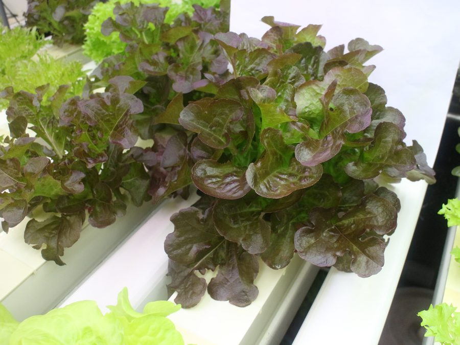

這週採收
11/17（一）至 11/23（日）・週二、週五採收
紅橡木萵苣充足 甜蘿蔓充足
甜蘿蔓充足 綠奶油萵苣充足
綠奶油萵苣充足 紅火焰萵苣剩少量
紅火焰萵苣剩少量 芝麻葉剩少量
芝麻葉剩少量 羽衣甘藍下週採收
羽衣甘藍下週採收
兩種買法，一次結帳
自家種的萵苣按包賣，合作農場的商品單件買。全部放進同一個購物車。
從下單到拿到菜
選好、結帳
萵苣和農場商品放進同一台購物車，用 LINE 登入就能下單。
採收、打包
萵苣在出貨當天早上才採。合作農場的商品先送到北投農場一起打包。
取貨或宅配
到北投農場自取，或選宅配。出貨時 LINE 會通知你。宅配區域與運費待定
合作農場
每一家都由我們實地拜訪後才上架。以下為版面示意，農場名稱與內容待提供
- 農場照片
花蓮縣富里鄉
合作農場 A（稻米）
無毒栽培的在地米，每月碾米一次。
- 農場照片
苗栗縣大湖鄉
合作農場 B（草莓、果醬）
冬季草莓與少糖果醬。
- 農場照片
彰化縣芳苑鄉
合作農場 C（雞蛋）
平飼放牧的雞蛋，每週集蛋兩次。
魚菜共生是怎麼運作的
魚的排泄物被水中的硝化菌分解成養分，萵苣吸收養分、把水濾乾淨，乾淨的水再流回魚池。整個循環不需要化學肥料，用水比土耕少約九成。
農場裡的感測器全天記錄水溫、酸鹼值和溶氧，數值異常時會立刻通知我們。

常見問題
蔬菜可以放多久？
連根的萵苣用袋子裝好放冰箱冷藏，大約可以放 7 到 10 天。保存天數請確認
合作農場的商品會和蔬菜一起寄嗎？
待你決定：統一從北投出貨，或由各農場直送。
可以自己到農場取貨嗎？
可以。結帳時選「北投農場自取」，到貨後 LINE 會通知你取貨時間。
魚菜共生的菜要洗嗎？
沒有使用農藥，但仍建議用清水沖洗後再吃。